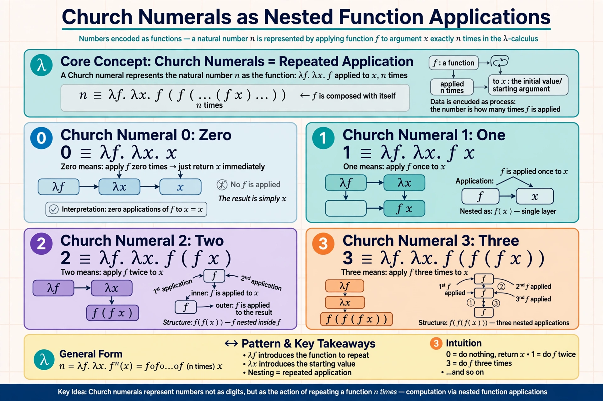

In mathematics, computer science, and logic, Church encoding is a means of representing data and operators in the lambda calculus. Named after Alonzo Church, who devised it in the 1930s, the encoding shows that numbers, booleans, pairs, and lists can all be built purely out of functions — a demonstration that the lambda calculus alone is a universal model of computation, foundational to later languages such as Lisp.
A natural number n is represented by a higher-order function that takes a function f and a value x and applies f to x exactly n times:
0 := λf.λx. x 1 := λf.λx. f x 2 := λf.λx. f (f x) 3 := λf.λx. f (f (f x))
Arithmetic operations become function definitions: the successor adds one more application of f; addition composes applications; multiplication composes numerals themselves; and exponentiation is simply application of one numeral to another. A predecessor function is considerably trickier and typically uses pairs.
Church booleans encode truth values as selectors: TRUE := λx.λy. x and FALSE := λx.λy. y, so a conditional is just application. Pairs are encoded as functions that hand their two components to a selector, from which projection functions recover each element. Lists can be built from pairs terminated by a special NIL value, or via right-fold (Scott and Böhm–Berarducci encodings offer alternatives).
Church encoding underlies the Church–Turing thesis argument that lambda calculus computes exactly the computable functions, and it remains a standard teaching example in programming-language theory; models of the untyped calculus (see Dana Scott's domain theory) had to account for such encodings.
Categories: Lambda calculus | Data types